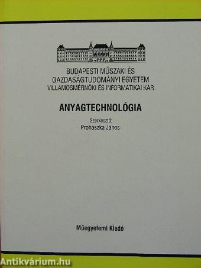

Villamos anyagtechnológia
Ez az oldal a Villamos anyagtecnológia című tantárgy tematikáját tartalmazza.
Feladata és célja:
A villamosmérnöki gyakorlatban használatos anyagok szerkezetének, tulajdonságainak bemutatása, valamint a tulajdonságokat befolyásoló tényezők hatásának megismertetése abból a célból, hogy a megfelelő anyagok kiválasztását, alkalmazását elősegítsük.
Tematika
- Az anyagok tulajdonságait befolyásoló tényezők
- A kémiai kötések
- Az ideális és reális kristályok
- A rugalmas és képlékeny alakváltozás leggyakoribb mechanizmusai
- Fémes anyagok mechanikai tulajdonságainak meghatározási módjai
- Az elektromos vezetés mechanizmusai
- Fémek és ötvözetek vezetőképességét befolyásoló tényezők
- Vezető és ellenállásanyagok
- Félvezetők és előállításuk legfontosabb műveletei
- Szigetelőanyagok gyakran alkalmazott csoportjai és tulajdonságaik
- Integrált áramkörök és gyártástechnológiák
- Mágneses anyagok és tulajdonságaik
- A legelterjedtebb mágneses anyagok tulajdonságai és gyártásának technológiai elemei